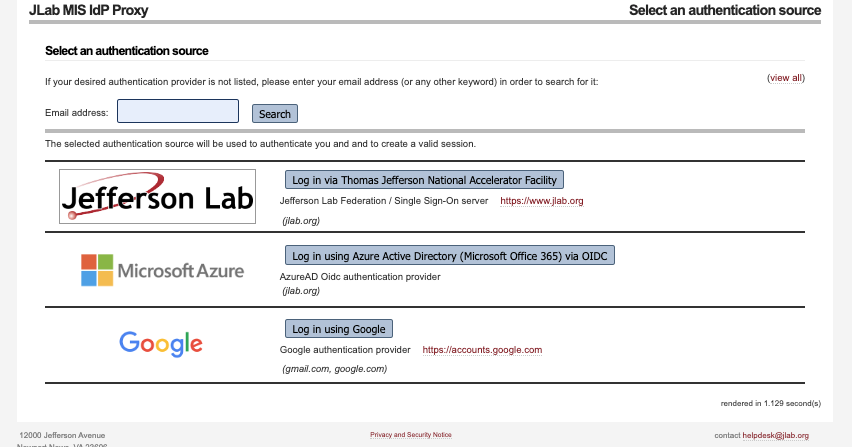

GITLAB @Jlab
The JLab User Gitlab instance is available here: https://code.jlab.org/ .
Login Procedure
Once you go to the site you will see the login page and select “Login with your institution Credentials” button.
Then you will land in following page:

The default permission and resource level depends which authentication method you choose on your first login.
- JLab login (Everyone with an @jlab.org account should do this!)
You will be automatically granted access to a number of Hall, Experiment, and/or Division GitLab groups based on your CUE unix group assignments.
You will be automatically granted space to create and manage personal repositories.
@jlab.org account holders are assigned additional privilges based on what JLab unix groups they are in when their GitLab account is initially created. Additional permissions can be granted by emailing their Compute Coordinator and explaining what they would like to do.
- Other login:
You will only have read only access to open/public projects.
For anything else, someone would need to grant you privileges to the repositories. Please talk to your Compute Coordinator .
Note
To search for repos public or internal groups (that you are part of) please got to the link
Create/Import Projects
Creating a New Project
To create a new project:
Click on the “+” icon in the top navigation bar.
Select “New project/repository”.
Choose “Create blank project” or select a template.
Fill in the project details:
Project name
Project URL: This determines where your project will be located in GitLab’s structure.
Personal namespace: Projects created here will have a URL like https://code.jlab.org/username/project-name
Group namespace: If you’re part of a group, you can create projects within that group. The URL will be https://code.jlab.org/group-name/project-name
Subgroup namespace: For more complex organizations, you can use subgroups. The URL structure would be https://code.jlab.org/parent-group/subgroup/project-name
Project slug (URL): This is a URL-friendly version of your project name, automatically generated from the project name but can be customized. It will be used in the project’s URL and should be unique within the namespace.
Visibility level:
Private: Only project members can access
Internal: Any authenticated user can access
Public: Anyone can access (useful for open-source projects)
Click “Create project”.
Tips for choosing the right namespace:
Personal projects are great for individual work or experiments.
Group projects are ideal for team collaborations or department-wide projects.
Consider your project’s scope and who needs access when deciding on the namespace.
You can transfer projects between namespaces later if needed, but it’s best to start in the right place.
Importing an Existing Project
Click on the “+” icon in the top navigation bar.
Select “New project/repository”.
Choose “Import project”.
Select the source of your project (e.g., GitHub, Bitbucket, repository URL and more).
Let’s focus on importing from Github.
Importing from GitHub
To import a project from GitHub, you’ll need to authenticate using a personal access token (PAT).
Using a Personal Access Token, first generate a GitHub personal access token:
Click “Generate new token (classic)”
Give your token a descriptive name
Select the following scopes: - repo (Full control of private repositories) - read:org (Read org and team membership, read org projects) (optional bu recommended)
Click “Generate token”
Copy the generated token (you won’t be able to see it again)
Paste your GitHub personal access token
Click “List your GitHub repositories”
Select the repositories you want to import
For each repository, you can: - Change the target namespace (where it will be imported in GitLab) - Change the target repository name - Set the visibility level (Private, Internal, or Public)
Click “Import” to start the import process.
Tips for a smooth import:
Ensure your GitHub email address matches your GitLab email for proper author attribution
Large repositories may take some time to import
You can check the import status on the project page after starting the import
After the import is complete, you’ll have a fully functional GitLab project with your GitHub repository’s history, branches, and tags. Issues, pull requests, and wiki pages will also be imported if you selected those options.
GitLab instance limits
There are limits on number of things comming from gitlab instance settings. All the default settings are kept the same for JLab gitlab. Please see the links: instance limit and accounts and limit
Few important links:
Pages limts: Number of files prt pages